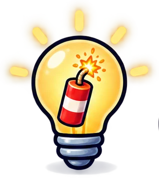

Módulo 0
Empieza aquí
Qué vas a construir, qué pide Up! Steam y cómo usar esta formación.
←→ para moverte · B buscar · P pantalla completa
Foto: S. Romero · CC0 · Wikimedia Commons
Módulo 0
Qué vas a construir: Masclet a masclet
Un juego de ritmo hecho en Scratch e inspirado en la mascletà de las Fallas.
- Suena un pasodoble de dolçaina y tabal.
- En la plaza del Ayuntamiento aparecen petardos con la mecha encendida.
- Haces clic en cada uno cuando se acaba la mecha: ¡PUM! Si llegas tarde: fsss.
- Cada petardo explota con una nota de la dolçaina.
Módulo 0
Para qué sirve esta formación
Para que puedas acompañar a tu clase en un proyecto de videojuego aunque no hayas programado nunca.

Ver el proceso real
Cómo nació la idea, los prototipos que no funcionaron y por qué. Así sabrás guiar a tu equipo cuando se atasque.

Aprender Scratch paso a paso
10 pasos. Cada uno añade una idea y tiene su proyecto para probar y descargar.

Llevarlo al aula
Sesiones, roles del equipo, cómo hacerlo vuestro y cómo presentarlo a Up! Steam.
El contexto
Up! Steam en un minuto
Una competición entre centros educativos de la Comunitat Valenciana. La promueve el Consejo Social de la Universitat Politècnica de València y la organiza Escuela de Ciencia, que ha hecho esta formación.
| Qué | Lo que dicen las reglas (edición 8, curso 2026-2027) |
|---|---|
| Categoría | Gamers: videojuegos inspirados en la cultura, las tradiciones, el arte o la historia valenciana, con valor educativo. |
| Nivel | Juniors: 5.º y 6.º de primaria. |
| Equipo | De 6 a 12 alumnos, con equilibrio de chicas y chicos. La portavoz es una chica. |
| Entrega | El juego en itch.io y un vídeo de 3 minutos. Sin vídeo, el proyecto no se evalúa. |
| Fechas | Inscripción hasta el 30 de noviembre de 2026. Entrega a mediados o finales de abril de 2027. |
Fuente: upsteam.es/reglas. Comprueba allí las fechas exactas antes de empezar.
El contexto
Lo que mira el jurado
Cuatro criterios. Cada uno vale el 25 %.
Innovación
Originalidad y creatividad. Una idea propia vale más que una copia bonita.

Diseño y presentación
Aspecto, facilidad de uso y la página del juego en itch.io.

Técnica
Cómo está hecho y cómo es el código.

Vídeo
Contenido, originalidad, calidad y música del vídeo de 3 minutos.
La formación
Los módulos
Unas 5 horas en total. Los módulos 3 y 4 son el paso a paso de Scratch.
De la idea al juego
La idea y los prototiposImágenes y música con IA
Prompts y herramientasScratch: un petardo
Pasos 1 a 5
Scratch: la mascletà
Pasos 6 a 10Al aula y a Up! Steam
Sesiones, publicar y vídeo
Todos los módulos
Y las descargasLa formación
Qué aprende tu clase: pensamiento computacional
Es resolver problemas como lo haría un programa: en pasos pequeños, buscando lo que se repite y probando. Cada paso trabaja una sola idea.
| Paso | Idea de pensamiento computacional | Se trabaja también |
|---|---|---|
| 1 · Un petardo en la plaza | Secuencia y eventos: órdenes en orden, al pulsar la bandera | Coordenadas x e y (Matemáticas) |
| 2 · La mecha se quema | Bucles: repetir en vez de copiar | Decimales: 8 × 0,125 = 1 |
| 3 · ¡PUM! al hacer clic | Paralelismo y depuración: dos programas a la vez; un error | Explicar por qué pasa algo |
| 4 · Los decibelios | Variables: una caja que guarda un número | Sumar y empezar desde cero |
| 5 · ¿A tiempo o fallado? | Condicionales: si pasa esto, haz aquello | «Mayor que» (Matemáticas) |
| 6 · Muchos petardos | Clones y azar: copias que funcionan solas | Números negativos |
| 7 · Con música | Tiempo: por qué se retrasa el programa | Pulso y tempo (Música) |
| 8 · Al ritmo | Listas y contador: muchos datos en orden | Leer una tabla de tiempos |
| 9 · Modo pirotécnico | Datos de entrada: el juego guarda lo que haces | Ritmo y creación propia (Música) |
| 10 · Remate | Mejorar y remezclar: hacerlo vuestro | Contar el juego en itch.io y en el vídeo |
En todos los pasos, tres formas de trabajar: avanzar poco a poco, probar y depurar y reutilizar lo que ya funciona.
La formación
Cómo se usa
- Avanza con las flechas ← →. Con B buscas dentro del módulo y con P pasas a pantalla completa.
- En los juegos, pulsa Probar. Para usar el teclado dentro del juego, haz clic en él (se marca en amarillo). Esc para salir.
- Descargar .sb3 baja el proyecto de ese paso para abrirlo en Scratch.
- En los pasos de Scratch, lo nuevo de cada paso sale con borde verde. Al jugar, se ilumina el bloque que se está ejecutando; con la velocidad Lenta o Muy lenta lo sigues bloque a bloque.
- Los prompts tienen un botón Copiar el prompt.
- Para la clase hay fichas para el alumnado: una por paso, con sus palabras, para proyectar o imprimir.
Haz los pasos en orden
Cada paso se apoya en el anterior. Es el orden en que lo haría tu clase.

Con altavoces
Es un juego de ritmo: sin sonido no tiene sentido.
La formación
Qué necesitas
Un navegador
Chrome, Edge o Firefox actualizado. La formación y Scratch funcionan en el navegador.
Scratch
En scratch.mit.edu, sin instalar nada. Para el aula, una cuenta de docente (gratuita) crea las cuentas del alumnado. También existe Scratch para escritorio, sin conexión.
Para el módulo 2 (opcional)
Un generador de imágenes con IA. ChatGPT da muy buenos resultados. Lo usa el docente, no el alumnado.
Fin del módulo 0
¿Empezamos por la idea?
En el módulo 1 verás cómo se pasó de «un juego sobre petardos» a Masclet a masclet, con los prototipos que hubo por el camino.